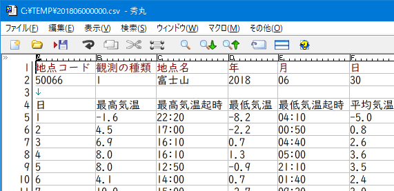
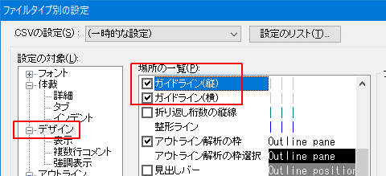

秀丸エディタ Ver.8.00以降では、「CSV/TSVモード」が使用可能です。
エディタ画面上で、CSV(カンマ区切りテキスト)、TSV(タブ区切りテキスト)を、表計算ソフトの様に表示するモードです。
表計算ソフトのように計算する機能はありません。また、表計算ソフトのような「セル内での改行」には対応していません。
TSV/CSVモードの場合、動作が変わる機能があります。 詳細は、秀丸エディタのヘルプー「TSVモード/CSVモード」を 参照してください。
普通の設定で、CSVファイルを開いた状態です。

「CSVモード」でCSVファイルを開いた状態です。(縦と横のガイドラインを表示)
カンマやタブを区切り文字として、表計算ソフトのように表示する事が可能です。

CSVモードにするには、「メニュー」から設定する方法と、「ファイルタイプ別の設定」から変更する方法があります。
メニューは「表示」−「タブストップ」−「CSVモード(カンマ区切り)」で設定します。

「ファイルタイプ別の設定」は「体裁」ー「タブ」−「タブの文字数」で設定します。

一時的に表示を変更したい場合にはメニューから変更する方がお手軽です。
CSV/TSVモード特有の動作として、ルーラ部のカラムをクリックする事で、列全体を選択する事が可能です。 そのままドラッグして、列を移動させることも可能です。

また、ルーラ部のカラムを右クリックすることで、その列をキーにしたソートが可能です。

「ファイルタイプ別の設定」ではなく、「動作環境」という扱いです。
「TSV/CSVモードの詳細」
「メニュー」や、「ファイルタイプ別の設定」−「体裁」−「タブ」から設定画面を開くことが出来ます。 セル幅の自動調整等が設定できます。
詳細はヘルプ：TSV/CSVモードの詳細を参照してください。

「ルーラの詳細」
TSV/CSVモードのカラム表示方法を設定できます。 「ファイルタイプ別の設定」−「体裁」−「タブ」にある「ルーラの詳細」から設定画面を開くことが出来ます。
詳細はヘルプ：ルーラの詳細を参照してください。

「目盛り」は、半角1文字ずつの目盛りを表示します、
ABCの設定
123の設定
桁数

「ファイルタイプ別の設定」の「デザイン」で「ガイドライン(縦)」と「ガイドライン(横)」を、 表示するようにすると、Excelのセルっぽく表示することが出来ます。

検索時の注意点
例えば、以下の状態で、項目(セル)内の「最高気温」だけを検索する場合を考えます。(「最高気温時」にはマッチさせない。)

単純に「最高気温」で検索した場合は、「最高気温」と「最高気温時」にマッチしてしまいます。
項目(セル)内の内容ということで、正規表現を使用し「^最高気温$」で検索しても、マッチしません。
これは、実際には
日,最高気温,最高気温起時,最低気温,最低気温起時,平均気温,日照積算量という内容を検索しているため、^と$は、行頭と行末になるためマッチしません。 (項目内の先頭、末尾にはならない)
項目(セル)内のみマッチさせるには、正規表現の、前方一致(戻り読み)と後方一致(先読み)を使います。
(?<=^|,)最高気温(?=$|,)正規表現を使用するため、検索内容に正規表現のメタ文字がある場合はエスケープする必要があります。
または、
(?<=^|,)\Q最高気温\E(?=$|,)という感じで、検索したい内容を、\Qと\Eで囲みます。
CSVの場合は "," が区切り文字となりますが、TSVの場合は、"\t" を使います。
(?<=^|\t)\Q最高気温\E(?=$|\t)指定した列のみ検索対象にしたい場合は、カラーマーカーを使います。
検索対象にしたい列全体を選択します。(ルーラー部分をクリックすれば、列全体を選択できます)
メニューの「検索」−「カラーマーカー」−「一時的なカラーマーカーを付ける」を選び、カラーマーカーを付けます。
対象にしたい列に対し、1.〜2.を繰り返します。
検索ダイアログを表示させ、「追加の条件」にチェックを入れ、範囲を「「一時的なカラーマーカー」の範囲」に設定します。 「追加の条件」に関しては、「第II部〜知っていると便利な秀丸の機能 検索」にある、 「追加の条件」を参照してください。

これで、検索を実行すれば、指定した列(カラーマーカーを付けた列)のみを、検索の対象に出来ます。
区切り文字の colorcode
CSVモードでも、区切り文字である "," のcolorcodeは、"0x00000020(タブ)"がセットされます。
区切り文字の表示
TSV/CSVモードの場合、設定によっては 区切り文字(CSVの場合は","、TSVの場合はタブ文字)は表示されません。
表示する場合は、「ファイルタイプ別の設定」-「デザイン」-「場所の一覧」にある「タブ文字」にチェックを入れます。 (CSVの場合も、「タブ文字」にチェックを入れてください。)

CSVモードで、「タブ文字」にチェックを入れ、区切り文字を表示した場合